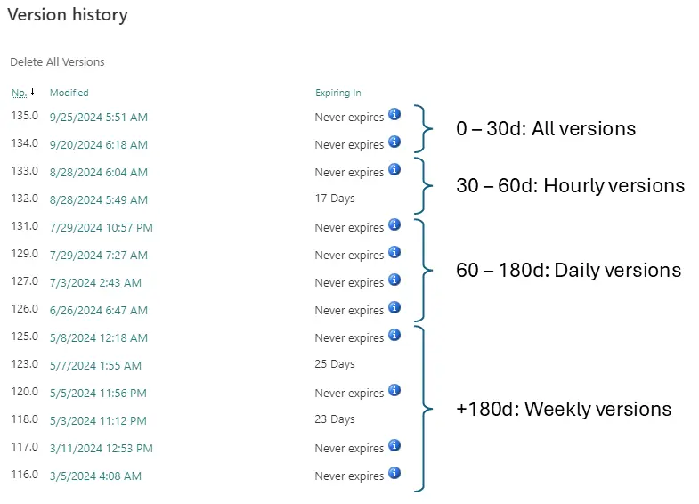
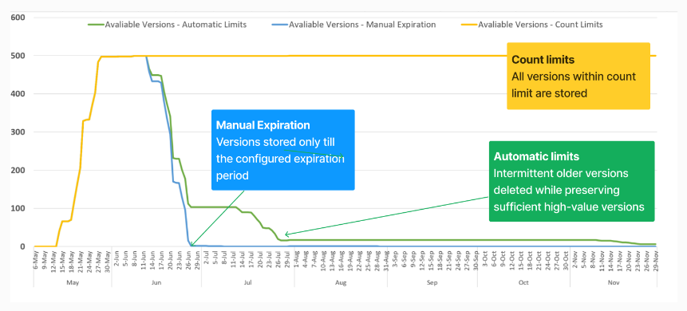
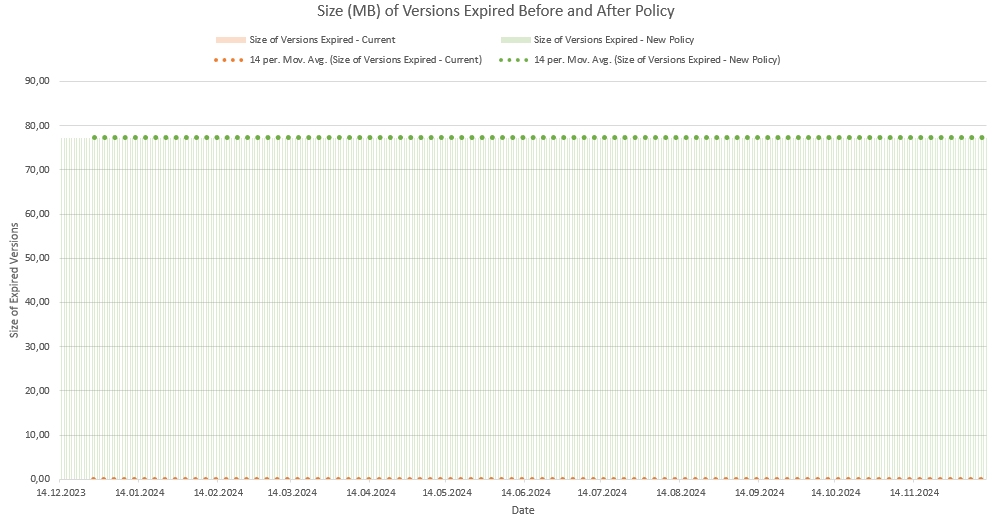
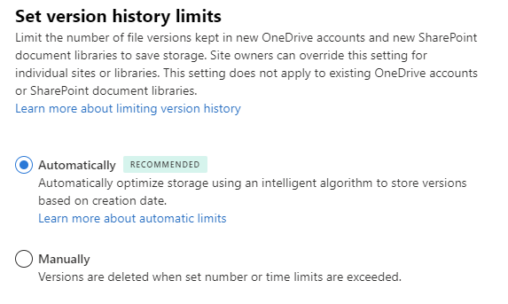

Is your company paying for extra SharePoint storage? Would you like not to?
What is it?
SharePoint and OneDrive automatically saves a major or minor version as you work, so there is a history of changes that you can access and revert to if needed. Microsoft recently started rolling out general availability of feature ID 145802: “SharePoint: Improvements for document library version history limits”. In simpler terms this means we now have an automatic way of thinning out the version history of files and documents in SharePoint Online.
Why is it important?
SharePoint Online has a default version history limit of 500 versions per file. This means that if you have a 100 MB file that is edited around 10 times per day, you will after two months have maxed out the version history, and the 100 MB file will take up 50 GB of storage. While this might sound like an edge case, it is not uncommon for companies to have large PowerPoint presentations and Excel sheets that are edited frequently. Co-authoring and autosave features in Office 365 also contributes to the version history growing rapidly.
But wait, isn’t deduplication a thing? Surely this one file is not taking up 50 GB of storage? Unfortunately, it counts towards the quota and Microsoft is probably reaping the benefits of this.
How does it work?
The idea is that the older a version becomes, the less value it has. Automatic versioning thin out the version history, allowing restoration points to be evenly spread out over time while still keeping the oldest versions.  Version storage under Automatic setting is determined by the following algorithm:
- All versions created within 500 count limit in first 30 days.
- Hourly versions (versions created at the top of the hour) between 30 to 60 day period.
- Daily versions (versions created at the beginning of each day) between 60 to 180 day period.
- Weekly versions (versions created at the beginning of the week) beyond 180 days or more are available indefinitely until the maximum 500 count limit has reached.
 The automatic setting gives a good balance between storage and usability. From experience implementing this feature for a number of sites, the storage savings can be significant. Up to 90%(!!!) storage reduction for certain sites.
How to enable it?
Note, changing the settings will not affect existing files, only new ones. If you want to estimate the impact and see which files are deleted, you can first generate a version usage report and run a “What-If” analysis.
Generate and analyze version usage report
# Verify PnP.PowerShell version
# Update-Module PnP.PowerShell
# If this doesn't work, you might need to install the prerelease version depending on the command you wish to run.
# Install-Module PnP.PowerShell -AllowPrerelease -SkipPublisherCheck
# Requires site admin permissions to https://yourcompany.sharepoint.com/sites/yoursite to run
New-PnPSiteFileVersionExpirationReportJob -ReportUrl "https://yourcompany.sharepoint.com/sites/yoursite/Shared%20Documents/VersionReport.csv"
The above code will generate a version report called VersionReport.csv in the Shared Documents library of the site. You can then download the report and run an impact analysis using tool provided by Microsoft. (Microsoft Learn: Version usage report analysis tool)
In the provided AnalyzeReportFile_Template.xlsx, the three most important tabs are “Dataset” which showns the version history of each file and if they will expire if an automatic policy is applied. “Version Count” which shows a graph of how many versions will be available before and after policy trim, and “Version Size Analysis” which shows the potential storage savings.  Storage savings around 80 MB for selected test site.
Global settings
Change the global version history limit setting to “Automatic” in the SharePoint admin center. This will apply to all new OneDrive accounts and new SharePoint document libraries. 
Site settings
As shown in the image above, this setting does not apply to existing document libraries unless they are set to inherit tenant settings. To enable it for existing document libraries, you need to use PowerShell.
# Check the current version policy for a site
Get-PnPSiteVersionPolicy
# If you want the site to inherit the global policy you can change the setting
Set-PnPSiteVersionPolicy -InheritFromTenant
Trimming existing version history
The above code changes the versioning policy for all new files. If you want to want to start thinning out the version history immediately, you can use the following code.
Warning! This code will irreversibly delete versions of files in the sites listed! Deleted versions are not recoverable, and will not be visible in the recycle bin. Make sure you understand the impact before running this code.
# Ensure that the account you are using has SharePoint Administrator activated
# Example input. Array of URLs
$sites = "https://yourcompany.sharepoint.com/sites/yoursite"
$donesites = "https://yourcompany.sharepoint.com/sites/yourothersite"
$companyAdminSite = 'https://yourcompany-admin.sharepoint.com'
$yourAccount = 'youraccount@company.com'
$PnPClientId = "Your PnP Client ID"
connect-pnpOnline -url $companyAdminSite -ClientId $PnPClientId
foreach ($site in $sites)
{
if ($site -in $donesites) {continue}
set-pnptenantsite -identity $site -owners $yourAccount
connect-pnpOnline -Url $site -ClientId $PnPClientId
New-PnPSiteFileVersionBatchDeleteJob -automatic -force
remove-pnpsitecollectionadmin -owners $yourAccount
connect-pnpOnline -url $companyAdminSite -ClientId $PnPClientId
}
You can get around adding yourself as a site collection admin to every site by using an enterprise registration with application permissions, but I wanted to keep the setup simple. The trick with this (ugly) code is that you only need to interactively sign in once.
The above code can also be run per library, but I have not tested it. (New-PnPLibraryFileVersionBatchDeleteJob)
Congratulations! You have now enabled automatic versioning for SharePoint Online and saved your company a lot of money. Ensure you write down your achievements and send them to your managers.
Where can I learn more?
Microsoft documentation: (Microsoft Learn: Plan version storage)